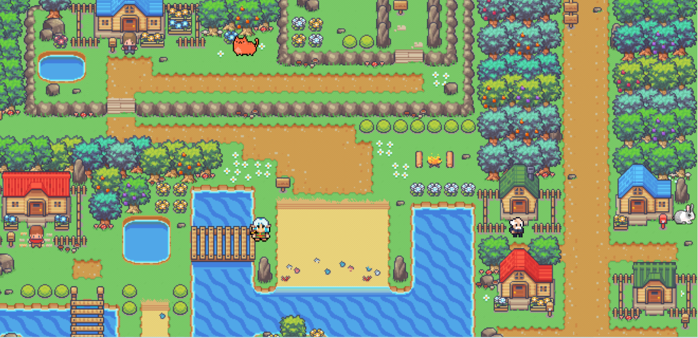
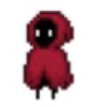
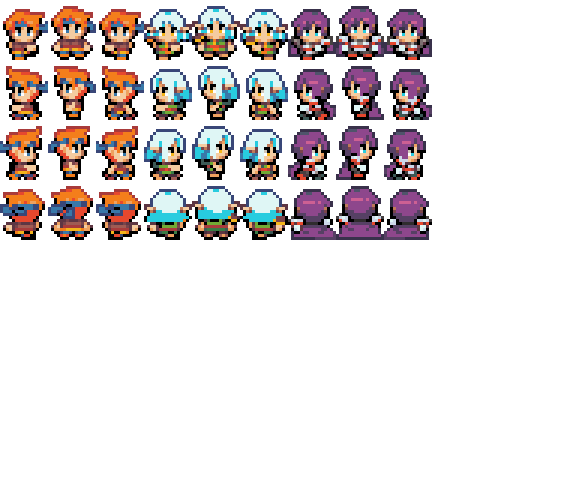

Dit is een schoolproject voor het vak Object Oriented Programming die is gemaakt tijdens mijn eerste jaar van de opleiding HBO-ICT
Kees Closed is een computerspel gemaakt voor kinderen van groep 6 tot groep 8. Het doel van het spel is om kinderen wat mee te geven over de gevaren van het internet. Denk bijvoorbeeld aan dat je nooit zomaar je wachtwoord met iemand moet delen. Dit project is gedaan met verschillende scrum methodieken zoals daily stand-ups & stand-downs, retro's, demo's en rollen zoals team coach, tracker, en user customer
Het computerspel werkt als volgt: de speler neemt de rol aan van het hoofdpersonage, die in een dorp woont samen met andere bewoners. De speler kan het dorp verkennen en met NPC's (niet-speelbare karakters) praten. Deze NPC's geven de speler zowel nuttige als misleidende informatie over de gevaren van internet. Plotseling verschijnt er een vreemde figuur, de hacker Kees, die de NPC's heeft gehackt. De taak van de speler is om de hacker Kees te vinden en te verslaan. Dit gebeurt door middel van een minigame. Nadat Kees is verslagen, komt de speler terecht in een memoryspel, waar hij de NPC's moet aanklikken die de juiste informatie hebben gegeven.



Dit was mijn eerste ervaring met het maken van een computerspel en met werken in TypeScript. Tijdens het ontwikkelproces merkte ik dat ik TypeScript snel onder de knie kreeg. Het spel is vervolgens getest door basisschoolkinderen, zodat we waardevolle feedback konden verzamelen en verwerken. Hierdoor heb ik veel geleerd over het omgaan met de doelgroep. Dit was een uitdaging, omdat het om kinderen ging.